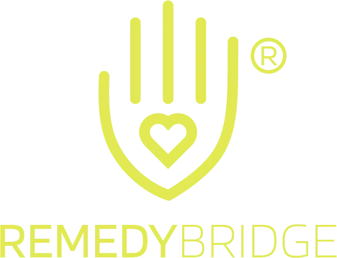

Seamless lead
generation
& conversion
Convertia's team is comprised of seasoned litigation and compliance attorneys who know what it takes to convert a lead into a viable case.
We convert in-house so we can ensure every step of our process adheres to legal an ethical standards.
Our compliance & invalid-claim detection programs also guarantee the quality of our conversions and safeguard our clients liability and reputation.
Our solutions
By Attorneys.For Attorneys.
At Convertia, we only provide attorney-vetted mass tort cases.
Traditional legal marketing agencies have no clue how a law firm is run or what it takes to actually land a lead. We do.
Our hand-picked prospects can be delivered into your case development pipeline in three simple forms:
Web form-fill leads
Live transfers
Signed retainer agreements
Our Lead
Generation
We engage with your potential clients where they spend most of their time:
online - through our digital channels.
Our digital campaigns can be hyper customized to target specific audience demographics/territories to fit your firm's criteria. You tell us what type of clients you want; we do the rest.
We can deliver leads where and when you want them: sent as texts, email, uploaded to your CRM, or directly transferred to your intake desk. The choice is yours.
All our lead generation campaigns are funneled through our proprietary RemedyBridge™ platform.
Current
campaigns
Currently, our campaigns are mostly focused on the following mass tort cases.
Hernia Mesh
Talcum Powder
NEC / Baby Formula
Camp Lejeune
Paraquat
Zantac
Roundup
AFFF / Firefighter Foam
Please note that the industry and market conditions can change fast - before we can even update the details (some MDL cases can progress quickly, or new claim types can arise). So, if the campaign your firm pursues is not on the list, we encourage you to contact us.
Our intake
& retainer
process
Our bilingual intake specialists are trained to keep prospective plaintiffs confident and engaged throughout the intake and to conduct all interactions with empathy and responsiveness. But because successful legal intake takes more than just proper professional etiquette, our intake team are also constantly trained to have the most up-to-date and comprehensive working knowledge of each case that we're working on.
Prospects are meticulously screened through detailed questionnaires. But we take our vetting process one step further. Through ad-hoc follow up questions and other validation techniques that we specifically devise for each campaign/product/tier, our intakers corroborate the accuracy and completeness of all relevant information.
If the prospect qualifies, we walk them through the signing of the retainer packets and medical authorizations.
Compliance
Integrity
Quality
Convertia takes consumer protection and fraud prevention in the mass tort industry most seriously.
Every step of our lead generation & conversion is TCPA compliant. We keep proof of digital consent through TrustedForm® and other ActiveProspect® solutions.
Our intake specialists are continuously trained by our own in-house expert litigation and compliance attorneys to capture any inconsistencies during calls and to produce real-time follow up questions to detect non-conforming claims and other veracity issues. This results in the accurate and timely completion of forms and outstanding closure rates but, most importantly, in the conversion of fundamentally sound signed cases.
Convertia operates combining the fast pace of a technology-led marketing agency with the intellectual rigor and relentless pursuit of outstanding results of a law firm.
Our team sets us apart. It is comprised of experienced attorneys, marketers and developers who know how to generate great leads and seamlessly convert them into viable cases.
Our leadership.
Marketing specialist with a Masters in Strategic Business Administration and more than 15 years of experience in corporate management, analysis and leadership. Angelica is always in search of process optimization and incorporating the benefits of technological innovation.
A yoga apprentice who is passionate about tourism and nature, reflection and lateral thinking.
International attorney with +15 years of experience serving as counsel in complex international litigation, including high-stake commercial and investment treaty arbitrations.
Jose has implemented a series of witness examination and other trial techniques into Convertia's Intake Specialist Training Program for the detection of fraud and inconsistencies.
He is also a legal tech enthusiast and an avid hiker & surfer.
Corporate Compliance and Corporate & Criminal Law specialist with +15 years of experience in these fields. Former VP Compliance Officer at Moody's Corporation for Latam. Pilar designed and leads Convertia's robust Compliance Program.
She is also a constant learner, an obsessive indoor cyclist and passionate about fostering diversity and inclusion in the legal profession.
Why
work
with
us?
The nature of Convertia's boutique agency allows us to focus on a specific number of tort cases and deliver small firm efficiency and responsiveness to all our clients.
Attorney-vetted quality guaranteed.
We stand behind our services by offering small minimum orders, so you can see what we can do before you commit to longer contracts.
We take your business seriously; no order is too big or small with us.
Highly competitive pricing.